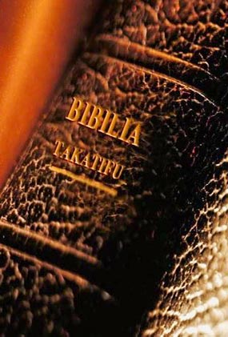

Kwa nini tuisome bibilia?
Mkristo ni mtu ambaye anaamini kuwa Yesu Kristo ni mwana wa Mungu na ambaye amemkubali yeye kama mwokozi na ameamua kuishi maisha ya kumfuata Yesu na mipango yake kwa maisha yetu.
Wakristo wanaamini kuwa Bibilia Takatifu ni ujumbe wa Mungu kwa mwanaadamu.
Wanajua kuwa ikiwa ukweli wanamjua Mungu kwa binafsia jinsi alivyosuudia kwetu, sharti waisome Bibilia.
Kwa kweli kuwa Wakristu, hivi ni kuwa, watu wanaoumfuata yesu na kuishi kulingana na vile alivyofunza wakati alipokuwa ulimwenguni, tunastahili kuisoma Bibilia. Tunastahili kujua kwa nini tunamwamini Yesu kama mwana wa Mungu na kuyahusu matukio yaliyomfanya Mungu Kumtuma yeye ulimwenguni kuwa mwokozi wetu.
Kuna kipindi Waamerika wengi walikua wakienda kanisani na walikuwa wakisoma na kuhusu Bibilia. Kulikuwa hata kipindi wakati Bibilia ilisomwa kwa sauti katika shule za serikali.
Ikiwa hukuwa ukisoma Bibilia na hukuweza kujua mengi kuhusu (ikiwa chochote) kuhusu hiyo, hauko peke mpweke! kitabu hiki kidogo kina shuhudia kukusadia wewe kuelewa ni aina gani kitabu hiki cha Bibilia kilicho:
- Jinsi kilivyoandikwa
- Jinsi ya kupata hadithi au kifungu ndani ya Bibilia.
- Hadithi kuu Bibilia hutuambia
Mungu atabariki moyo wako na akuvute karibu kama utakuja kumjua Yeye kupitia usomaji Bibilia!